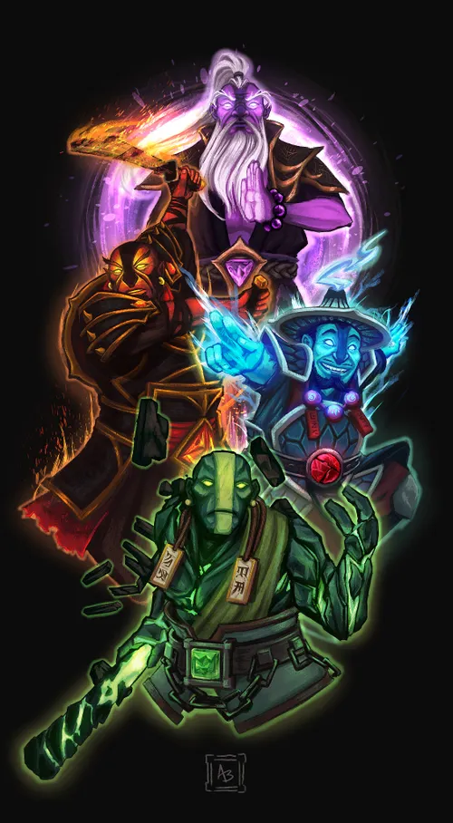
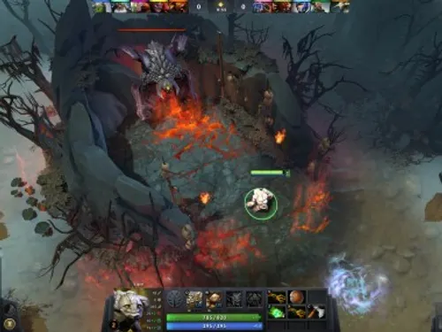
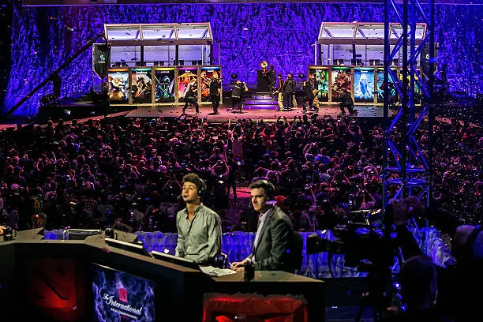

¿Qué es el Dota?
Dota 2 es un videojuego de estrategia en tiempo real (MOBA) desarrollado y publicado por Valve Corporation. Es la secuela del popular mapa personalizado "Defense of the Ancients" (DotA), creado originalmente como una modificación del juego Warcraft III.

Jugabilidad
La jugabilidad de Dota 2 se basa en la coordinación entre los jugadores y la gestión eficiente de los recursos. Cada jugador controla un personaje único con habilidades especiales, y el objetivo es destruir la base enemiga mientras se protege la propia.

Competencia y Comunidad
Dota 2 cuenta con una de las comunidades de esports más grandes y activas del mundo, con millones de jugadores activos y una escena competitiva profesional consolidada desde hace más de una década. Equipos de distintas regiones participan en ligas y torneos durante todo el año, siendo "The International" el evento más importante, conocido por repartir algunos de los premios más altos en la historia de los deportes electrónicos. Además de la escena profesional, el juego mantiene una comunidad muy activa que crea contenido, guías, modificaciones y transmisiones en vivo, contribuyendo a que Dota 2 siga siendo relevante y en constante evolución años después de su lanzamiento.
